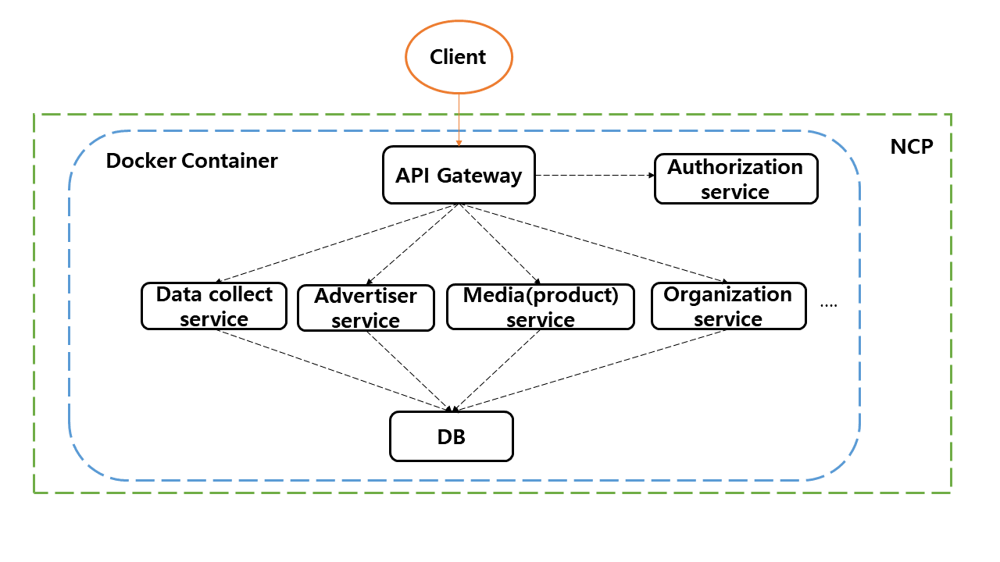

MSA(Microservice Architecture)를 토대로 Docker를 사용한 RMS(Resource Management System) 구축하기
MSA 란?
마이크로서비스는 전통적인 모놀리틱(monolithic)방식과는 다르게 각각의 핵심 기능을 세분화하여 서비스 단위로 제공합니다.
사용자의 요청은 API Gateway를 통하여 서비스에게 전달 되며 서비스간의 호출도 API Gateway를 통하여 진행됩니다.
서비스들은 서로 독립적으로 배포 가능하며, 서로간의 의존성은 최소화 합니다.
또한, 각 서비스들은 서로간의 통신을 정의된 API(REST..)를 사용해 진행합니다.

출처:https://brunch.co.kr/@sangjinkang/11
1차 RMS 프로젝트 설계
각각의 핵심 기능을 프로젝트 기획서를 참고로 서비스 단위로 나눈 그림입니다.
Host 서버는 NCP에서 구동중이고, Docker container를 하나의 서버로 생각하고 NCP 위에 각 서비스 + API Gateway + DB 컨테이너를 구동합니다.
